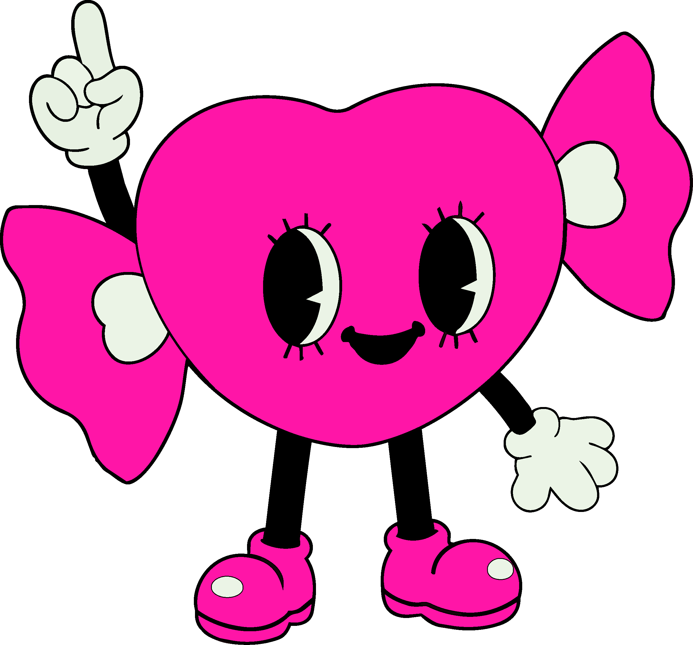

자주 묻는 질문과 답변
ARM CANDY PROGRAM에 관해 자주 묻는 질문과 그에 대한 답변을 준비했습니다.
해당 내용이 원활한 ARM CANDY 프로그램을 수행하는 데에 도움이 되기를 바랍니다.
기타 문의사항이나 질문은 1:1 문의 페이지를 통해 남겨주시면 최대한 빠르게 답변해 드리겠습니다.
Q.프로그램 과정을 외부에 공개해도 되나요?
A. ARM CANDY PROGRAM의 모든 콘텐츠 및 프로그램 과정에 대한 소유권은 당사에 귀속됩니다. 이에 따라 프로그램 내용의 외부 공개, 배포, 재가공 등 일체의 유출 행위는 엄격히 금지되어 있습니다. 해당 규정 위반으로 인해 발생하는 모든 법적 책임 및 손해는 전적으로 당사자 본인에게 있음을 안내드립니다.
Q. 프로그램 과정의 모든 지침을 반드시 따라야 하나요?
A. 당사의 지침은 우선 적용됨을 원칙으로 합니다. 선택적 수행 시 발생하는 결과의 차이에 대해 당사는 책임지지 않습니다. 참고하시기 바랍니다
Q. 프로그램 완료 이후에도 교정 상태가 지속되나요?
A. 당사는 프로그램의 종료 이후에도 이상적 상태가 영원히 유지되는 것을 목표로 합니다
Q. 프로그램 진행 중 다른 유형으로 변경이 가능한가요?
A. 가능합니다. 그러나 변경 시 기존 진행 과정은 초기화되며 다시 시작해야 합니다.
Q. 프로그램 진행 전 별도로 준비해야 할 것이 있나요?
A. ARM CANDY PROGRAM에서는 사전 테스트를 통해서 개개인에 맞는 프로그램을 추천하고 있습니다. 사전 테스트를 통해 보다 적합한 프로그램을 선택할 수 있으니, 사전 테스트를 진행하시길 바랍니다.
Q. 프로그램 진행 중 무단으로 중단할 경우 어떻게 되나요?
A. 중단은 가능합니다. 단, 진행 과정에서 변경된 일부 상태는 이전 상태와 완전히 동일하게 복귀되지 않을 수 있습니다.
Q. 프로그램 진행 시 부작용이 발생할 수 있나요?
A. 일부 사용자에게서 불편감, 선택 과정의 변화, 기존 반응 방식과의 차이가 나타날 수 있습니다. 그러나 이는 정상적인 과정으로 간주되며 지속 여부 및 강도는 개인에 따라 다르게 나타날 수 있습니다.
